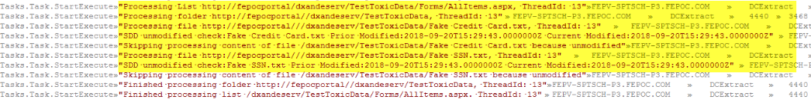

Summary: If an SPAA scan was run prior to an SPSEEK scan the DC will skip processing the content of potentially sensitive files due to the T2 still containing the last modified timestamp data from the SPAA scan.
Issue: When running a scan with the SPAA DC a last modified timestamp is pulled from the files metadata and stored in T2. This is how we are able to scan differentially and avoid scanning the same files twice when there hasn't been any changes to them effectively causing scans to take longer than necessary. The problem is when an SPAA scan is run before an SPSEEK scan we will skip processing the content of files for sensitive data based on the existing last modified date in T2. There will be messages in the logs similar to these:

Instructions: The way to address this issue is quite simple, the data collected during the SPAA scan needs to be dropped before running a subsequent SPSEEK scan in order for the DC to not skip processing those files.
Steps:
- Delete or moveT2s located in %SAINSTALLDIR%\Program Files (x86)\STEALTHbits\StealthAUDIT\Jobs\SA_CommonData\SharePointHostName
- (T2s on the application server for Agent Mode scans found on the drive that the customer installed the agent\Program Files\STEALTHbits\StealthAUDIT\SPAA).
- Drop the data in T1
- Can be dropped using the Drop Tables analysis tasks found in the 1-SPAA_SystemScans Analysis section.
Note: Do not run the SPAA_SystemScans job to accomplish this:
- Click the 'Select All' button on the analysis page
- Right click on of the tasks and select 'Execute Analyses'. This will execute all 4 of the analysis tasks.
Note: Remember to deselect the analysis tasks before running subsequent SPAA scans. Also if the goal is to run Sensitive Data scans you should not be running SPAA scans and Imports and should disable those jobs (if in 8.2) or remove the jobs from the group (8.1).
Product: StealthAUDIT
Module: SA - DC - SPAA - Permissions;SA - DC - SPAA - Sensitive Data
Versions: All Versions
Dev Ticket: SASP-3903
Legacy Article ID: 2197